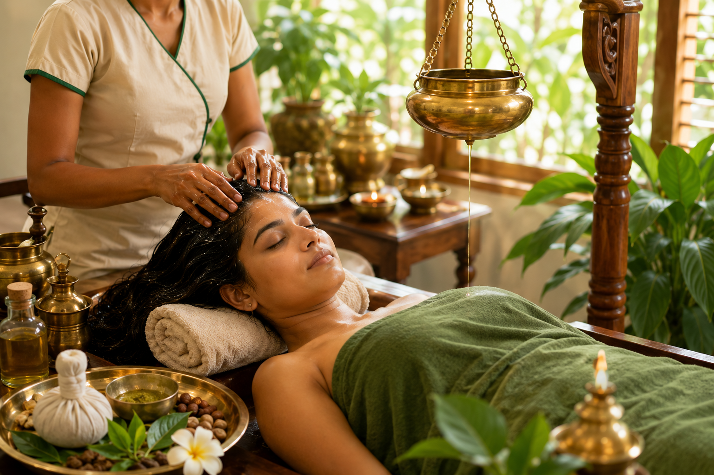
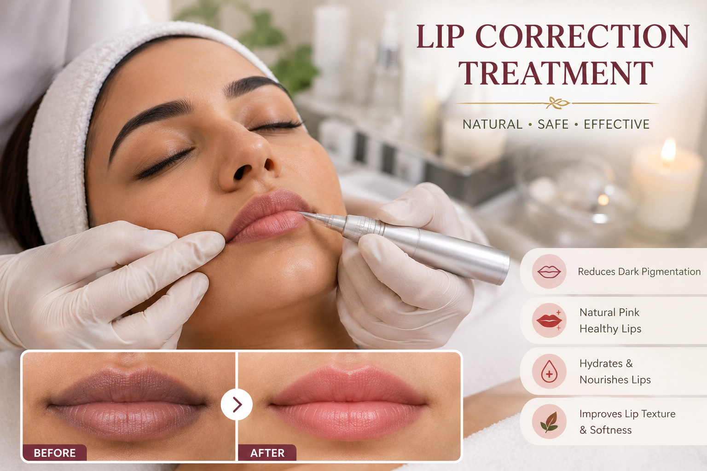
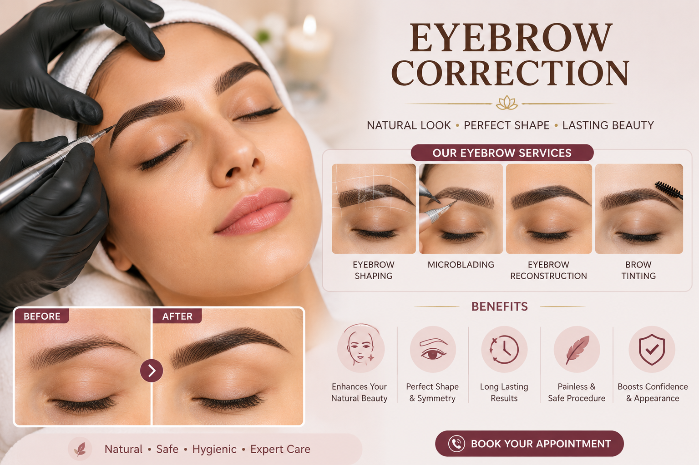
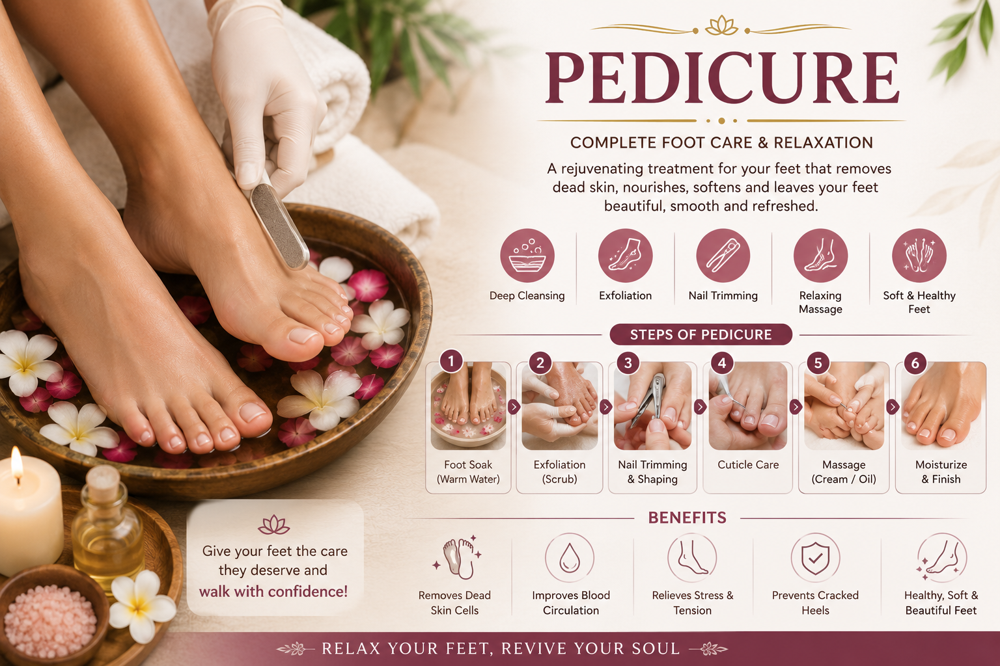

Neolife Wellness Center
Ayush Wellness Center
Ayurveda • Panchakarma • Acupuncture • Yoga • Naturopathy

Traditional Ayurvedic consultation and Panchakarma therapies for detoxification, rejuvenation and holistic wellness.
Duration: As per treatment plan

Supportive therapy for pain management, stress relief and restoring body balance.
Duration: 30–45 minutes

Yoga sessions for flexibility, strength, breathing, stress relief and mental peace.
Duration: 45–60 minutes

Natural healing through diet, lifestyle, hydrotherapy, yoga and drug-free wellness practices.
Duration: 30–45 minutes

Professional facials for glowing, healthy and rejuvenated skin.
Duration: 45–60 minutes

Natural hair care therapies for hair growth, hair fall control and scalp nourishment.
Duration: 60–90 minutes

Treatment for dark lips, pigmentation and natural lip brightening.
Duration: 45–60 minutes

Eyebrow enhancement for fuller, shaped and natural-looking brows.
Duration: 90–120 minutes

Complete foot care with cleansing, nail care, exfoliation and massage.
Duration: 45–60 minutes